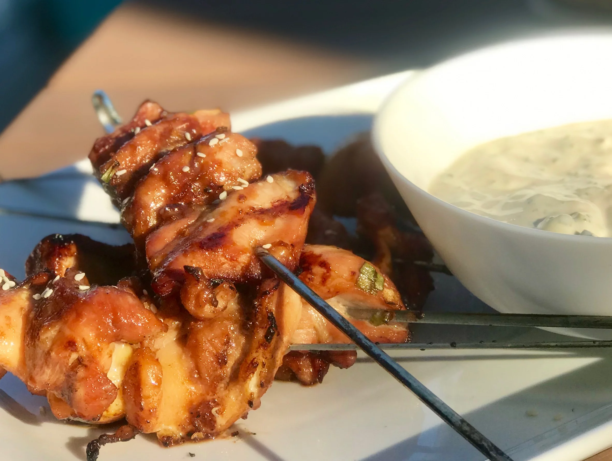

If ‘teri' means ‘shine,' and ‘yaki' refers to grilling, then these chicken skewers are the poster children for teriyaki.
Ingredients
Directions

If ‘teri' means ‘shine,' and ‘yaki' refers to grilling, then these chicken skewers are the poster children for teriyaki.